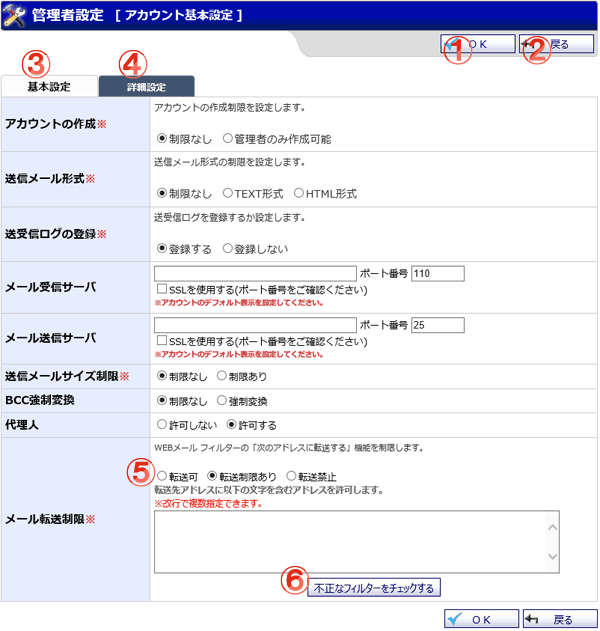
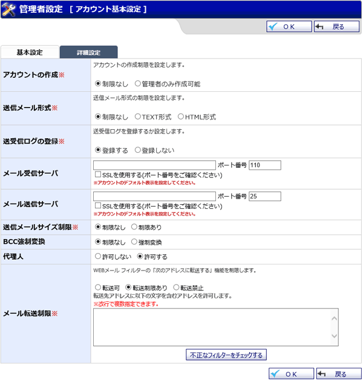
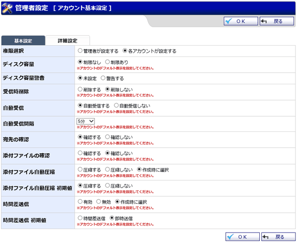

WEBメールのアカウント基本設定画面です。

タブを切り替えることによって、設定項目を切り替えることができます。
設定項目の表示の違いは下記を参照してください。
基本設定の場合

詳細設定の場合

機能説明
OKボタンアカウント設定確認画面へ遷移します。 |
戻るボタン遷移元画面へ遷移します。 |
|---|---|
基本設定タブ基本設定画面を表示します。 |
詳細設定タブ詳細設定画面を表示します。 |
メール転送制限ラジオボタン・"転送制限あり"を選択すると[転送先アドレス制限文字]の入力欄が表示されます。
|
不正なフィルターをチェックするボタン[転送先アドレス制限文字]が含まれない転送先メールアドレスを設定しているフィルターの一覧を表示します。 |
表示・入力項目説明
基本設定の場合
アカウントの作成
アカウントの作成制限を設定します。
送信メール形式
送信メール形式の制限を設定します。
送受信ログの登録
送受信ログの登録を行うか設定します。
メール受信サーバ
メール受信サーバのデフォルト値を設定します。
メール送信サーバ
メール送信サーバのデフォルト値を設定します。
送信メールサイズ制限
送信メールのメールサイズ制限を設定します。
BCC強制変換
"強制変換"を選択した場合、送信メールの[宛先]と[CC]の合計件数が「閾値」を超えると[宛先]と[CC]が全て[BCC]へ変換されます。
代理人
代理人を使用するか設定します。
メール転送制限
受信メールのフィルタリング処理でメール転送が行われる場合の制限を設定します。
詳細設定の場合
権限選択
権限を設定します。
ディスク容量
ディスク容量の制限を設定します。
ディスク容量警告
ディスク容量警告の設定をします。
受信時削除
受信時の削除設定を行います。
自動受信
自動受信を設定します。
自動受信間隔
自動受信を実行する間隔を設定します。
宛先の確認
メール送信時に送信先を確認するか否か設定します。
添付ファイルの確認
メール送信時に添付ファイルを確認するか否か設定します。
添付ファイル自動圧縮
メール送信時に添付ファイルを圧縮するか否か設定します。
"圧縮する"を選択した場合、添付ファイルは zip圧縮(パスワード付)された状態で送信されます。
また、添付ファイルの解凍パスワードを記載したメールが送信メールとは別に送信されます。
添付ファイル自動圧縮 初期値
※添付ファイル自動圧縮に"作成時に選択"を設定した場合のみ。
メール作成時に指定する「添付ファイルの自動圧縮」の初期値を設定します。
時間差送信
メールの送信を即時行うか、もしくは一定時間後に送信するかを設定します。
時間差送信 初期値
※時間差送信に"作成時に選択"を設定した場合のみ。
メール作成時に指定する「時間差送信」の初期値を設定します。